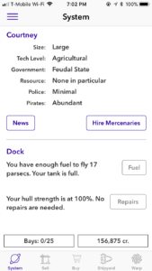
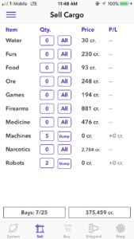
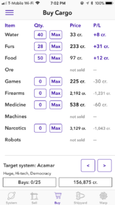
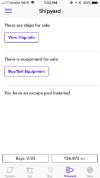
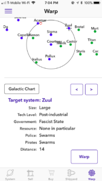
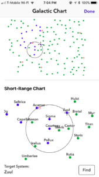

Space Trader: Gameplay & Implementation Feb 25, 2018
Gameplay is broken into two main categories, events that happen on the planet, and those that happen in transit between one planet and another. The on-planet portion of the game takes place within a five part tab view controller. The parts are as follows:
During a warp journey, the player experiences a sequence of encounters, with pirates and officers of the law, who will attempt to plunder his cargo and enforce prohibitions against the trade of contraband, respectively. He may fight or flee, potentially disabling and plundering or destroying his opponents, and earning a reputation in the process.
  In the interest of recreating the feel of the original, text-based game, the buy and sell screens are made with grids of manually arranged subclasses of UIButtons and UILabels. By switching classes, elements can be made to appear, disappear, and change text size and color. Everything is included within a scrollView, to handle the case of the 4” screen, which is too small to display the entire table at once.
  The navigation charts were accomplished with custom UIView objects, in which draw functions are used to render planets from the galaxy class, as well as crosshairs indicating selection, and a range circle indicating the distance the player can travel.
Game data is contained in instances of two classes, Commander, which contains all data pertaining to the player, and Galaxy, which stores everything about the automatically generated galaxy, including planet locations and market conditions. Additional classes, such as Ship, CrewMember, Gadget, HighScore, Journey, Newspaper, PoliticsType, SavedGame, Shield, SpecialEvent, StarSystem, TradeItem, and UniversalGadget, are used to structure other aspects of gameplay.